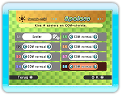
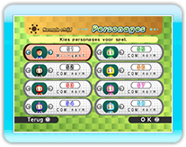

10 |
Normale strijd instellen |
 |
|
Een normale strijd speel je als volgt.
Kies hoeveel mensen er meedoen en stel de moeilijkheidsgraad voor COM-personages in op "Eenvoudig", "Normaal" of "Moeilijk". Kies "Leeg" om 1 personage minder te laten meedoen.
Druk op
* Je kunt ook gast-Mii-personages gebruiken, maar dan worden de strijdresultaten niet opgeslagen. * Een Mii-personage dat is opgeslagen op de actieve Wii-afstandsbediening kan alleen worden geselecteerd als er een gast-Mii-personage wordt geselecteerd.
Kies de strijdregels uit 6 verschillende typen.
* Als je een rangenstrijd speelt in Wi-Fi strijdmodus, kun je "TEAMS" en "VERRASSING" niet kiezen.
Je kunt alleen teams maken als je "TEAMS" selecteert in het scherm Regels.
Kies een decor om in te spelen en druk op
Druk op
Controleer de instellingen nog eens en stel dan voorwerpen en handicaps in.

Na afloop van een strijd verschijnt het scherm Resultaten. Als je Trofeeën speelt, wordt het totale aantal gewonnen spellen weergeven, als je Score speelt, het totale aantal punten. Als het ingestelde aantal ronden is gespeeld, wordt de winnaar bekendgemaakt.
|
|||||||||||||||||||||||||||||||||||||||||||||||||||||||||||||||||||||||||||||||||||||||||||||||||||||||||||||||||||||||||||||||||||||||||||||||||||||||||||||||||||||||
 |
 |
 |